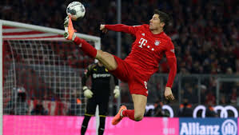

Robert Lewandowski jest zawodnikiem, który występuje na pozycji środkowego napastnika. Cechuje go ponadprzeciętna precyzja i skuteczność w wykańczaniu akcji. Bardzo dobrze gra głową, a także obiema nogami, chociaż jego wiodącą jest noga prawa. Do perfekcji opanował wykonywanie rzutów karnych.  Zdobywa także bramki bezpośrednio z rzutów wolnych. Większość strzałów oddaje poprzez uderzenia wewnętrzną częścią stopy, nie wykorzystując do tego nadmiernej siły. Przez ekspertów uznawany jest za napastnika kompletnego, jednego z najlepszych we współczesnej piłce nożnej. Posiada wszelkie niezbędne cechy tradycyjnej „dziewiątki”, jest wysoki, dobrze zbudowany, silny, szybki, potrafi bardzo dobrze i inteligentnie poruszać się na boisku. Mimo że występuje jako napastnik, jest bardzo przydatny także w grze obronnej oraz w fazie odbioru piłki. Potrafi umiejętnie się zastawić, utrzymać piłkę, rozprowadzić akcję, a także skupiając na sobie uwagę obrony, stworzyć przestrzeń dla innych zawodników. Wyróżniają go bardzo dobre umiejętności techniczne, wizja gry, przygotowanie i siła fizyczna. Oprócz umiejętności czysto piłkarskich, Lewandowski przez ekspertów, zawodników i trenerów jest również chwalony za wybitną etykę pracy, profesjonalizm, wzorową mentalność, dyscyplinę, prowadzenie zdrowego stylu życia i skrupulatne przestrzeganie diety żywieniowej.